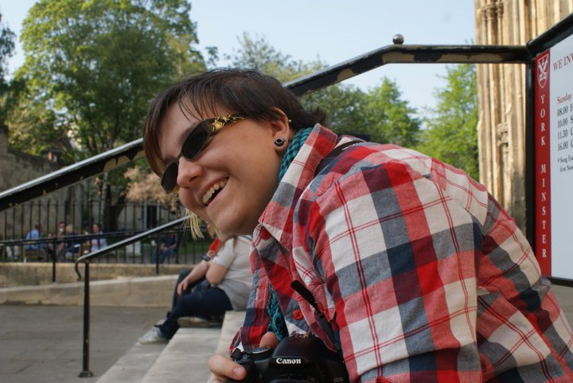

Hey I'm Liane Stevenson and I am a young, creative Full Stack Developer living and working in Stoke-on-Trent Staffordshire. I have worked with the likes of BBC, Volkswagen, Kwik-Fit, Ikea and Kinder to produce beautiful and functional websites, applications, mobile apps and games. At weekends I am a volunteer zoo keeper and by weekday a passionate developer / designer. I grew up working with wolves in wolf conservation, hence the studio name Web Dev Wolf Studios.
I'm not a graphical designer by any stretch of the imagination, but I'm a great story-teller and developer. If you think you can inject a great looking visual engine to any of my works then please email me @ webdevelopwolf@gmail.com
Refuge is built using the Chronicle Decision Engine. Incorperating past and present actions to determine the players future, the Chronicle Engine aims to create a true butterfly effect decision system where each decision counts. Building on the work of others such as TellTale and DotNod, I aim to make an engine that doesn't compensate for itself for the sake of linear story arc.
Big choices in the players life have big impacts on their present and future. I don't think these engines should compensate or compromise for the sake of story or development time. Each players journey in the Chronicle world will be unique and individual, whilst offerering the same great story telling that made games such as The Walking Dead and Life is Strange so memorable and emotional.
Refuge is our ALPHA experience whilst we test and trial the engine's planning and theory. We've taken on an insumountable challenge here at Web Dev Wolf and we want to make sure that we can deliver with the quality and conviction this engine should deserve. Please feel free to try the game, but also please let us know any feedback on your own personal gameplay experience and be patient whilst we make this as awesome as we know it can be!
Check out some of the other cool games we've made!